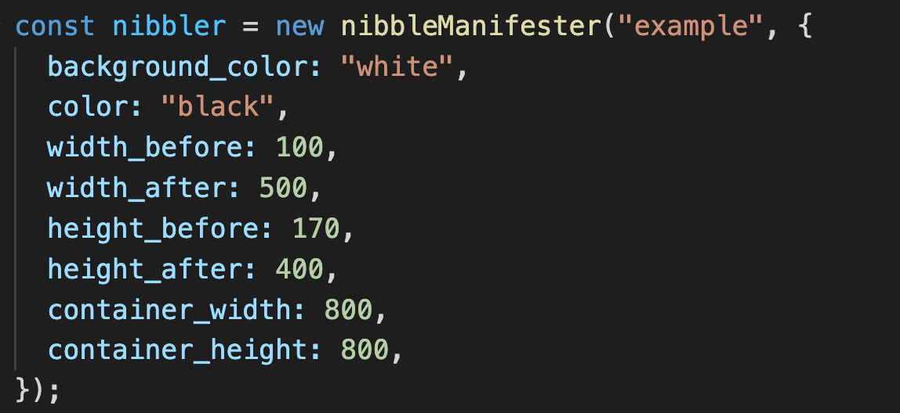
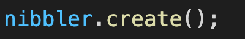
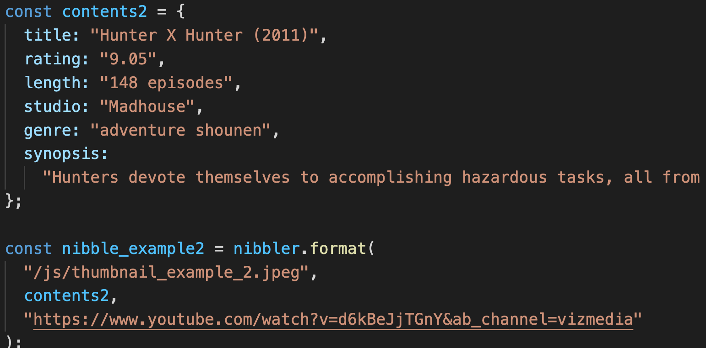
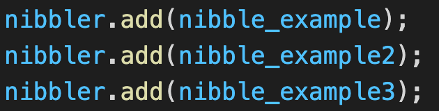

Getting started
Initialization of nibbleManifester(id, style)
This is the initialization function for the library. You must pass in 2 parameters: the id parameter (string) is the id of the HTML component you want to create the nibble in, and the style component (object of key value pairs of strings and integers shown above) is a optional parameter that includes the dimensions (in px) and color choices of the nibble you wish to create, you can leave fields blank for the default values. This function will return a nibbleManifester object.
nibbleManifester.create()
This function creates an empty container that will later be holding the nibbles you will create. The width and height is automatically calculated based on the dimensions specified in nibbleManifester and the number of existing nibbles.
nibbleManifester.format(thumbnail, content, trailer)
This function will help you create the object required to create a nibble. It takes 3 parameters, first the thumbnail parameter (string) is the url of the thumbnail of the nibble you wish to be displayed. Second the content parameter (object of key value pairs of strings as shown above) stores the associated information you wish to be displayed in the nibble, if you leave certain fields blank, the formatting function will automatically populate 'N/A' values for you. Lastly the trailer parrameter (string) is the website link of the trailer video of the show. This function returns an object which can be used to create a nibble.
nibbleManifester.add(info)
This function creates the nibble and adds it to the nibble container created in the .create() function. This function takes in 1 parameter which is the info parameter (object), info is the object created in the .format() function above, it stores the information you wish to be displayed in the nibble. The function will not return anything. In the example above, we can see that 3 nibbles has been created, and they will also be automatically fomatted based on the dimensions stored in the nibbleManifester object.